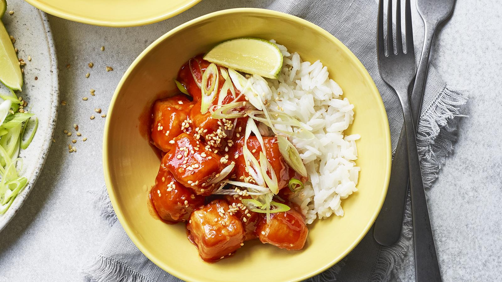

Sweet and sticky tofu

A retro favourite revisited! Sweet and sour sauce with tofu makes a mouthwatering quick and easy vegan supper.
Ingredients
- 1 block (approximately 300g/10½oz) firm tofu, drained and pressed for 10 minutes
- 6 tbsp cornflour
- 2 tbsp soy sauce
- 2 tbsp vegetable oil, plus extra for shallow frying
For the sweet and sour sauce
- 2 tsp cornflour
- 2 tsp vegetable oil
- 2 garlic cloves, finely chopped
- 1 tsp grated fresh root ginger, or more, to taste
- ½ tsp dried chilli flakes or 1 tsp sriracha chilli sauce, to taste
- 2 tbsp tomato purée
- 4 tbsp sugar
- 1 tbsp soy sauce
- 1 tbsp rice vinegar
To serve
- spring onions, chopped
- sesame seeds
- lime wedges
- cooked rice
Method
- To make the sweet and sour sauce, mix the cornflour and 120ml/4fl oz water in a small bowl and set aside.
- Heat the oil in a small saucepan over a medium heat. Add the garlic, ginger and chilli flakes and fry for a few seconds until fragrant. Then whisk in the remaining sauce ingredients and the cornflour mixture and bring to the boil. Cook for a minute until thickened, then remove from the heat and set aside.
- Cut the tofu into 2cm/¾in cubes. Place the cornflour, soy sauce and oil in a bowl and mix well to create a batter. Add the tofu cubes and stir until coated in the batter.
- Heat some oil in a frying pan over a medium–high heat. Add the tofu and cook for about 3 minutes on each side, until golden brown and crispy all over.
- Add the sweet and sour sauce, stir to coat the tofu, and cook over a low–medium heat for about 1–2 minutes until hot.
- Serve immediately, garnished with spring onions and sesame seeds, with lime wedges on the side, and rice.
Recipe credit: The Hairy Bikers, BBC Good Food
Return to Mains Page